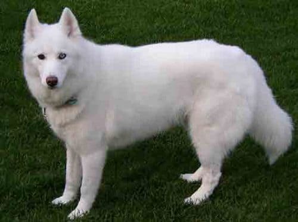
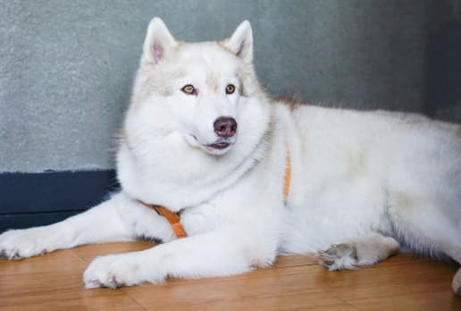
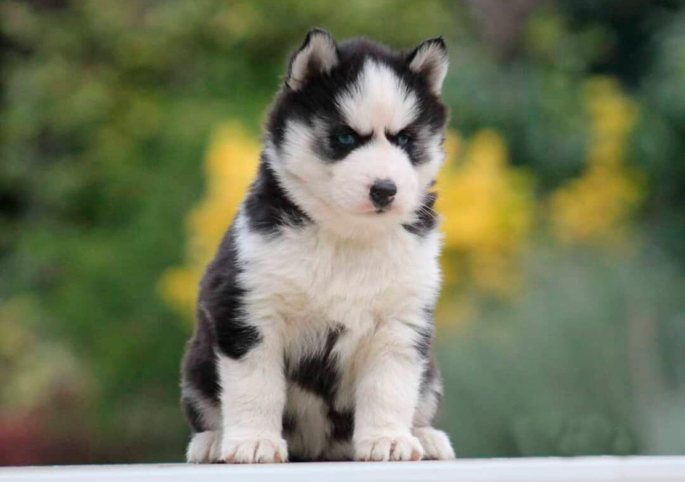
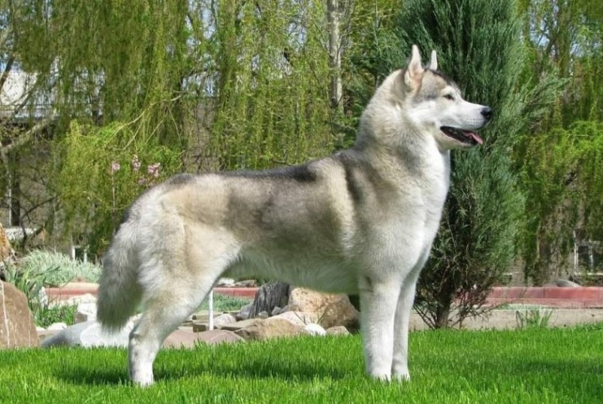
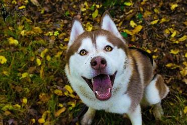
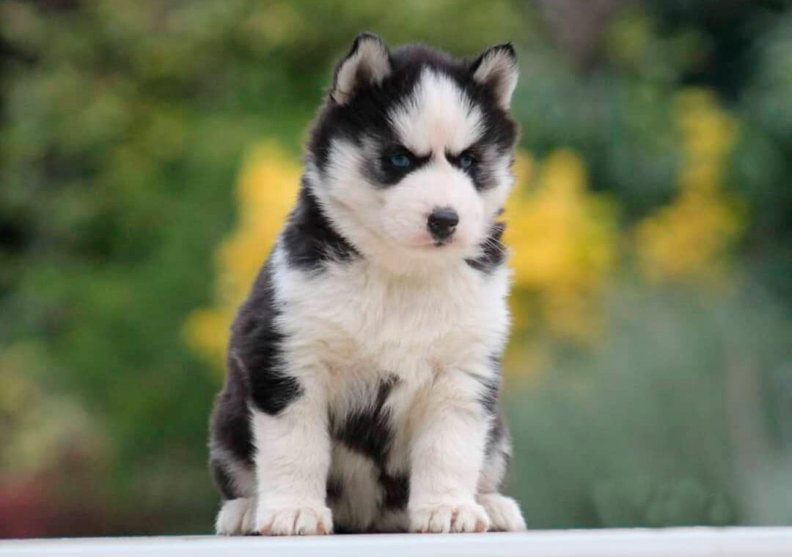
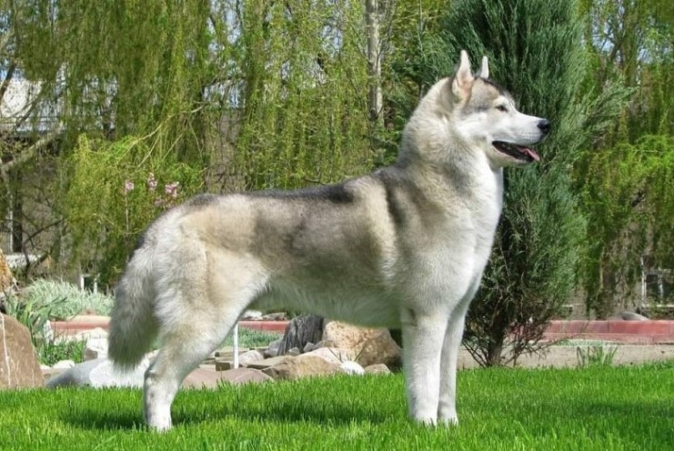
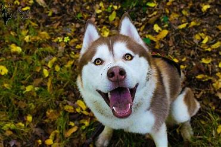

7 Colores del Husky Siberiano
El Husky Siberiano es una raza de perro muy popular que destaca por sus ojos en color azul y/o marrón, aunque igualmente por su hermoso pelaje que varía en más colores.
Este pelaje se divide en dos capas, que son, la capa interna, de color blanco, que sirve para protegerse del frío en el invierno al ser más densa, y la capa externa, que tiene su función al proteger la piel y el manto interno, siendo la que vemos en diferentes tonalidades.
Husky Siberiano Blanco
Se trata de uno de los colores de Husky Siberiano más raros, y por ello de los más codiciados, ya que es totalmente blanco a causa de un gen recesivo.
Husky siberiano Arena
Si bien cuando son cachorros su pelaje es blanco por completo, en la medida en que crecen este se va tornando de un color arena o beige muy claro.
Husky siberiano Negro

El negro es de los colores más comunes que se presentan esta raza, el cual se puede ver combinado con tonos grises, hasta color plata.
Husky siberiano Rojo

El color predominante en estos canes es el rojizo o anaranjado, pero se hace presente del mismo modo tonalidades en marrón o chocolate.
Husky siberiano gris

Los matices del Husky Siberiano gris pueden variar del más claro al más oscuro, sin dejar de lado en color plata, incluso con tonos azulados.
Husky siberiano Sable

El color denominado como sable se compone de un pelaje con puntas en un tono negro o gris, con una base en beige o tonos rojizos, siendo más oscuro su rostro.
Husky Siberiano pinto

No es una clasificación de sus colores, ya que puede ser de los antes mencionados, se trata más bien de un patrón de manchas a lo largo de su pelaje exterior.
 




